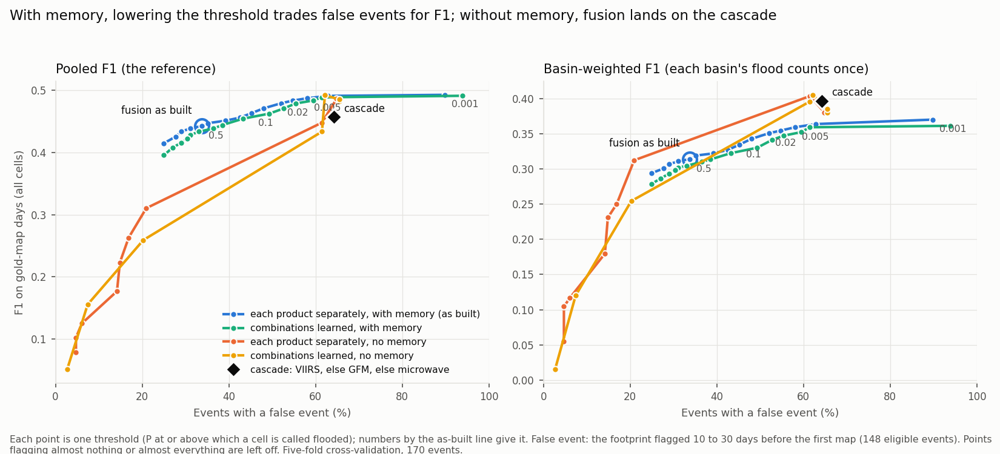
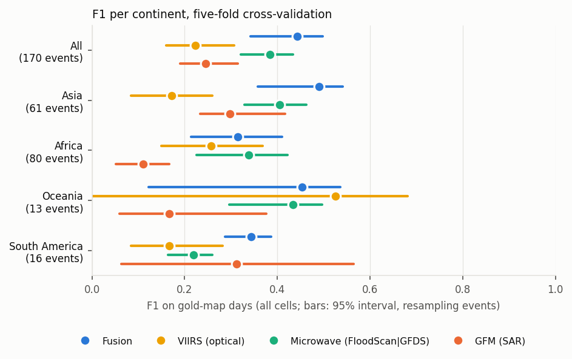
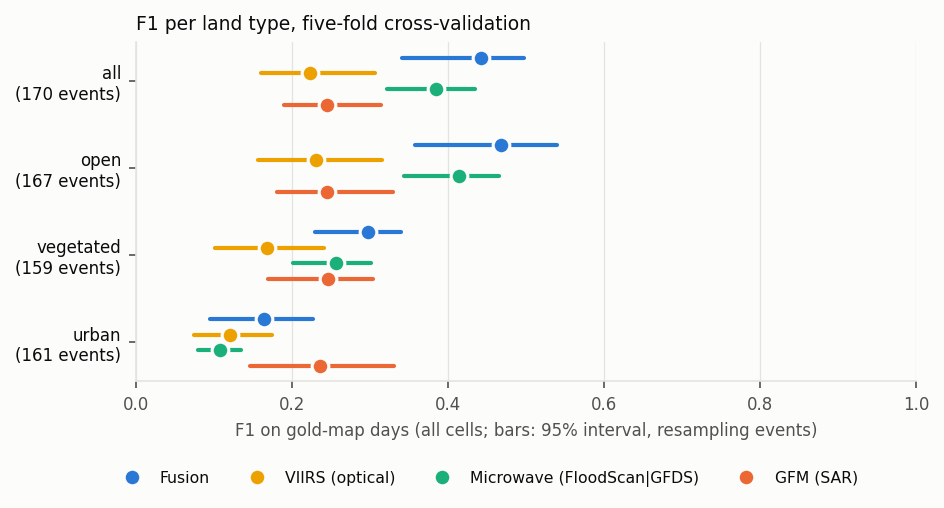
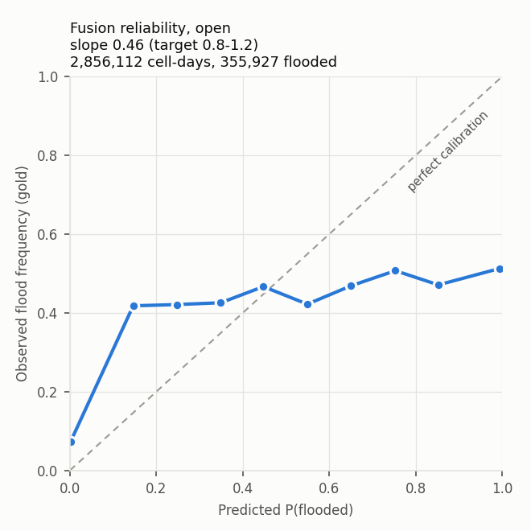

14 Results
Every event is scored once, by rates fitted on the other four folds. All scores are on gold-map days in the 170 events: 404,014 gold flooded cell-days. Each score is pooled over cells, so large floods weigh more; brackets give the 95% interval from resampling events.
In short.
- Against the single products it combines, fusion has the highest F1 overall (0.44), in Asia (0.49), in open land (0.47) and in vegetated land (0.30). Its lead over the best single product, the microwave vote (0.38 overall), is within the uncertainty, and sits mostly on cells that are normally wet in that month (Water versus flood: where the problems sit).
- A simple rule that needs no fitting matches fusion. Take VIIRS where VIIRS saw the cell, else GFM, else the microwave vote: F1 0.46 against fusion’s 0.44, a difference within the uncertainty. Weighting each river basin equally, the simple rule is clearly ahead (0.40 against 0.31). Fusion’s one clear advantage is at event level: far fewer false events (34% of events against 64%). See A simpler bar: the best-available cascade.
- Learning how the products’ reports combine does not beat the cascade either. The best version (no memory, threshold chosen in each fold) scores 0.49 pooled against the cascade’s 0.46, but is level basin-weighted and on false events. Fusion’s memory is what gives it few false events, and it costs F1: with these products, fusion can catch about as many floods as the cascade or raise far fewer false events, not both (Can fusion beat the cascade?).
- VIIRS is what puts fusion ahead. Run without VIIRS, fusion scores 0.39, level with the microwave vote. Where VIIRS has files, it adds 0.08 F1 to fusion (0.06–0.10). VIIRS’s own low score (0.22) is mostly missing files: its archive has none for 2021-01 to 2023-07, which holds 28% of the gold flood.
- FloodScan does almost all of the microwave work. With FloodScan alone in the microwave slot, fusion loses 0.01 F1; with GFDS alone, 0.06; with no microwave, 0.11.
- One river basin weighs heavily. Four UNOSAT floods in Bangladesh (2017, 2018, 2020 and 2022) share one HydroBASINS level-4 basin and hold 40% of all gold flooded cell-days. Without them, fusion scores F1 0.35, the microwave vote 0.34 and FloodScan 0.33, with overlapping intervals.
- Criteria: (a) fusion has a value on as many cells as the microwave vote, which covers almost every cell; (b) passes on the point estimate in open and vegetated land, with overlapping intervals, and fails in urban land, where GFM is better; (c) fails in every land type.
- Event level: fusion catches 68% of events, more than any single product except the microwave vote (74%), but raises a false event on 34% of them. GFM catches fewer (49%) and raises the fewest false events (13%).
14.0.1 All cells
A product’s gaps count as misses.
| product | recall | precision | F1 |
|---|---|---|---|
| fusion | 0.43 (0.30–0.51) | 0.46 (0.37–0.53) | 0.44 (0.34–0.50) |
| microwave vote | 0.40 (0.32–0.45) | 0.37 (0.31–0.43) | 0.38 (0.32–0.43) |
| FloodScan | 0.34 (0.25–0.39) | 0.42 (0.36–0.48) | 0.37 (0.31–0.42) |
| GFM | 0.14 (0.11–0.19) | 0.86 (0.78–0.91) | 0.24 (0.19–0.31) |
| GFDS | 0.17 (0.12–0.24) | 0.36 (0.29–0.44) | 0.23 (0.18–0.29) |
| VIIRS | 0.14 (0.10–0.22) | 0.52 (0.42–0.62) | 0.22 (0.16–0.31) |
VIIRS ranks last here mostly because its archive has no files for 2021-01 to 2023-07, which holds 28% of the gold flood; there every flooded cell counts as a VIIRS miss. Where it has files, VIIRS is what puts fusion ahead (VIIRS: what it adds, below).
Without the Bangladesh basin (166 events, 244,189 gold flooded cell-days):
| product | recall | precision | F1 |
|---|---|---|---|
| fusion | 0.34 | 0.38 | 0.35 (0.29–0.42) |
| microwave vote | 0.37 | 0.31 | 0.34 (0.28–0.39) |
| FloodScan | 0.29 | 0.38 | 0.33 (0.26–0.39) |
| VIIRS | 0.18 | 0.47 | 0.26 (0.17–0.37) |
| GFDS | 0.20 | 0.31 | 0.25 (0.19–0.29) |
| GFM | 0.14 | 0.82 | 0.24 (0.16–0.34) |
With the old rule for the days before and after (every examined cell dry): fusion 0.38 · 0.46 (F1 0.41), against 0.43 · 0.46 (F1 0.44) with the adopted rule. Precision is the same; recall is lower, because false-alarm rates fitted on draining floodwater give flood reports too little weight.
14.0.2 A simpler bar: the best-available cascade
A fair test of fusion is whether it beats the simplest way of combining the same products, one that needs no fitting at all. The cascade takes, for each cell and day, the first product that saw it: VIIRS, else GFM, else the microwave vote. (A colleague’s suggestion; the order was fixed before running. GFM first is shown only as a check that the order does not matter.)
The same comparison is also shown under views that stop one basin or the label problems from deciding the answer. All the views were fixed before any of them was computed for the cascade (scripts/fusion/cv_baselines_and_views.py):
- pooled: the reference score used everywhere on this page;
- basin-weighted: each river basin’s flood counts once (the 72 basins with at least 50 gold flooded cell-days), so the Bangladesh basin no longer holds 40% of the weight;
- by gold map sensor: map days whose maps come from Sentinel-1, other radar, optical imagery, or a mix;
- normally-wet cells not scored: the cells where gold is split between flood and dry are left out (Water versus flood).
F1, gold-map days, all cells:
| view | fusion | cascade | fusion minus cascade (95% interval) | GFM-first cascade | best single product |
|---|---|---|---|---|---|
| pooled (the reference) | 0.44 | 0.46 | −0.015 (−0.092 to +0.045) | 0.44 | microwave vote 0.38 |
| basin-weighted (72 basins) | 0.31 | 0.40 | −0.083 (−0.124 to −0.041) | 0.39 | FloodScan 0.28 |
| gold map from Sentinel-1 | 0.43 | 0.42 | +0.008 (−0.140 to +0.087) | 0.40 | microwave vote 0.36 |
| gold map from other radar | 0.54 | 0.53 | +0.012 (−0.119 to +0.125) | 0.54 | microwave vote 0.48 |
| gold map from optical | 0.43 | 0.49 | −0.059 (−0.114 to +0.006) | 0.48 | FloodScan 0.41 |
| gold map from a mix or unknown | 0.41 | 0.47 | −0.057 (−0.185 to +0.015) | 0.46 | microwave vote 0.39 |
| normally-wet cells not scored | 0.36 | 0.46 | −0.097 (−0.145 to −0.057) | 0.46 | FloodScan 0.34 |
| Africa | 0.31 | 0.42 | −0.105 (−0.150 to −0.048) | 0.42 | FloodScan 0.34 |
| Asia | 0.49 | 0.46 | +0.025 (−0.067 to +0.084) | 0.44 | microwave vote 0.40 |
| Oceania | 0.45 | 0.58 | −0.130 (−0.286 to −0.054) | 0.60 | VIIRS 0.53 |
| South America | 0.34 | 0.38 | −0.037 (−0.193 to +0.070) | 0.37 | GFM 0.31 |
| open land | 0.47 | 0.48 | −0.010 (−0.096 to +0.070) | 0.46 | microwave vote 0.41 |
| vegetated land | 0.30 | 0.34 | −0.044 (−0.105 to +0.009) | 0.34 | FloodScan 0.27 |
| urban land | 0.16 | 0.22 | −0.059 (−0.129 to −0.004) | 0.22 | GFM 0.24 |
The interval compares the same resampled events (basins, for the basin-weighted view) for fusion and the cascade. Pooled recall and precision: fusion 0.43 and 0.46; cascade 0.41 and 0.52.
Was the event caught (same rules as everywhere on this page):
| product | events | caught | false event | caught, no false event | median days to detection |
|---|---|---|---|---|---|
| fusion | 148 | 68% | 34% | 36% | −2 |
| cascade: VIIRS, else GFM, else microwave | 148 | 86% | 64% | 24% | −2 |
| cascade: GFM first (check) | 148 | 86% | 64% | 25% | −2 |
Reading.
- On the reference score, the cascade and fusion are level: 0.46 against 0.44. The cascade has higher precision (0.52 against 0.46) at similar recall.
- Wherever one basin or the label problems stop deciding the answer, the cascade is ahead: basins weighted equally (0.40 against 0.31), normally-wet cells left out (0.46 against 0.36), and in Africa, Oceania and urban land. Fusion is ahead only in Asia, home of the Bangladesh basin, and within the uncertainty.
- By gold sensor, they are level on radar maps; the cascade is ahead on optical maps (0.49 against 0.43), which are drawn from imagery like VIIRS’s.
- Fusion’s one clear advantage is at event level. It raises a false event on 34% of events, the cascade on 64%: where VIIRS and GFM saw nothing, the cascade falls back to the microwave vote, which flags the same cells for weeks. Caught without a false event: fusion 36%, the cascade 24%.
- The order does not matter much: GFM first scores 0.44 pooled.
- What it means. On cell-level scores, fusion as built does not beat the simplest way of combining the products. The clearest gap is on the cells VIIRS sees, where VIIRS alone beats fusion (Observed cells). A fusion model should at least learn what the cascade does by rule; that is the next step to try (Next steps, 9).
14.0.3 Can fusion beat the cascade? Three switches
Fusion differs from the cascade in three ways. Each was switched on and off separately, which gives 2 × 2 × 2 versions of fusion (scripts/fusion/cv_pattern_model.py; the rules and the test for success were committed before it ran):
- How evidence is combined. As built, each product’s report adds its own evidence, as if the products were independent. The alternative learns, on the training folds, how strongly each combination of reports signals flood: 27 combinations of flood, dry or couldn’t see, per land type. “Couldn’t see” itself carries no evidence, because cloud and flood come together on map days, and that would not carry over to ordinary days.
- Memory. As built, yesterday’s belief carries over (decay 0.9), so evidence builds up over days. The alternative judges each day on its own, like the cascade.
- Threshold. As built, a cell is called flooded at P ≥ 0.5. The alternative uses the threshold with the best F1 on the training folds, chosen inside each fold.
The test for success was fixed beforehand: above the cascade on both pooled and basin-weighted F1, with fewer false events.
In the first run the threshold could go down to 0.02. Every fold chose 0.02, and a built-in check failed: the learned version without memory should at least match the cascade on its own training folds, and it did not. As planned for that case, the threshold was allowed down to 0.001; the check then passed. The table shows that follow-up. Rows at threshold 0.5 are the same in both runs.
| version | threshold | pooled F1 | vs cascade | basin-weighted F1 | vs cascade | false events | caught, no false event | reliability slope |
|---|---|---|---|---|---|---|---|---|
| fusion as built: each product separately, memory, 0.5 | 0.5 | 0.44 | −0.015 (−0.092 to +0.045) | 0.31 | −0.083 (−0.124 to −0.043) | 34% | 36% | 0.43 |
| combinations learned, memory, 0.5 | 0.5 | 0.43 | −0.029 (−0.108 to +0.030) | 0.30 | −0.095 (−0.140 to −0.054) | 31% | 36% | 0.43 |
| each product separately, memory, threshold in fold | 0.001 | 0.49 | +0.036 (−0.033 to +0.085) | 0.37 | −0.027 (−0.063 to +0.012) | 90% | 3% | 0.43 |
| combinations learned, memory, threshold in fold | 0.001–0.002 | 0.49 | +0.032 (−0.035 to +0.081) | 0.36 | −0.035 (−0.073 to +0.005) | 88% | 5% | 0.43 |
| each product separately, no memory, threshold in fold | 0.002–0.02 | 0.45 | −0.011 (−0.024 to +0.005) | 0.38 | −0.012 (−0.051 to +0.015) | 65% | 22% | 1.25 |
| combinations learned, no memory, threshold in fold | 0.002–0.01 | 0.49 | +0.030 (−0.004 to +0.060) | 0.39 | −0.010 (−0.047 to +0.018) | 64% | 24% | 4.29 |
| cascade: VIIRS, else GFM, else microwave | – | 0.46 | – | 0.40 | – | 64% | 24% | – |
The two versions with no memory and threshold 0.5 are left out of the table: they almost never call flood (pooled F1 0.10 and 0). With a base flood rate of 0.2%, one day’s evidence never reaches P 0.5 on its own.
Reading.
- No version passes. The closest is the learned combinations with no memory and a threshold chosen in each fold: pooled F1 0.49 against the cascade’s 0.46 (interval −0.004 to +0.060), level basin-weighted (0.39 against 0.40) and level on false events (64%). It behaves like a learned cascade: slightly better on the reference score, no better elsewhere.
- Learning the combinations helps only without memory. With memory it changes nothing (0.43 against 0.44 at threshold 0.5). Without memory it adds 0.04 pooled over treating the products separately (0.49 against 0.45).
- Memory sets fusion apart, both ways. It gives fusion its low false-event rate (34%): a cell has to build up evidence over several days before it is called flooded. With a low threshold, the same memory makes false events explode (88–90%), because evidence that builds up over a wet season crosses a low threshold almost everywhere. Those versions chose the lowest threshold allowed even after the follow-up; going lower would only add false events.
- The probabilities are not yet usable as probabilities. With memory the slope stays at 0.43. Without memory and with the learned combinations they are far too low (slope 4.3), because the base rate is set from ordinary days and applied on flood days; only the threshold was moved to compensate.
- What it means. With these three products, fusion can catch about as many floods as the cascade, or raise far fewer false events, but not both. Which matters more is a decision about how the product will be used (Next steps, 10).
The trade-off, threshold by threshold. Every version scored at every threshold, the same threshold in every fold (cv_pattern_model.py --sweep):

How to read it. Each point is one version at one threshold, the P at or above which a cell is called flooded. Left: pooled F1; right: basin-weighted F1. Up is better; left is better (fewer false events). The ringed point is fusion as built; the black diamond is the cascade.
| version | threshold | recall | precision | pooled F1 | basin-weighted F1 | events caught | false events | caught, no false event |
|---|---|---|---|---|---|---|---|---|
| with memory, each product separately | 0.9 | 0.37 | 0.47 | 0.41 | 0.29 | 59% | 25% | 36% |
| with memory, each product separately (as built) | 0.5 | 0.43 | 0.46 | 0.44 | 0.31 | 68% | 34% | 36% |
| with memory, each product separately | 0.2 | 0.46 | 0.45 | 0.46 | 0.33 | 71% | 43% | 30% |
| with memory, each product separately | 0.05 | 0.50 | 0.44 | 0.47 | 0.34 | 75% | 48% | 29% |
| with memory, each product separately | 0.01 | 0.55 | 0.43 | 0.48 | 0.35 | 78% | 55% | 25% |
| with memory, each product separately | 0.002 | 0.59 | 0.42 | 0.49 | 0.36 | 81% | 63% | 20% |
| no memory, combinations learned | 0.01 | 0.45 | 0.55 | 0.49 | 0.41 | 83% | 62% | 24% |
| no memory, each product separately | 0.02 | 0.37 | 0.57 | 0.45 | 0.40 | 82% | 61% | 24% |
| cascade: VIIRS, else GFM, else microwave | – | 0.41 | 0.52 | 0.46 | 0.40 | 86% | 64% | 24% |
- With memory, the threshold is a dial. Each step down catches more floods and raises more false events: from 0.9 (false events on 25% of events, F1 0.41), through fusion as built at 0.5 (34%, 0.44), to 0.002 (63%, 0.49). Basin-weighted, it stays below the cascade at every threshold (at most 0.37 against 0.40).
- Without memory there is no dial. Above a threshold of about 0.02, fusion flags almost nothing; at or below it, it lands on the cascade’s point, with about 62% false events.
- Caught without a false event is highest with memory and a high threshold: 36–37% at 0.5–0.8, against the cascade’s 24%.
- One point looks better than the cascade on everything: combinations learned, no memory, threshold 0.01: pooled 0.49 against 0.46, basin-weighted 0.41 against 0.40, false events 62% against 64%. But that threshold was found by looking at these test scores. Chosen fairly, inside each fold, the same version only ties the cascade (table above), and the margins are within the uncertainty.
- How to choose. If the product feeds alerts, where a false alarm costs trust, fusion as built or a higher threshold. If it feeds maps, where missed water costs more, a low threshold with memory, or no memory; and then the simple cascade does about as well.
14.0.4 Per continent

How to read it. Each dot is one product’s F1 on the gold-map days of that continent’s events; the bar is its 95% interval from resampling events. FloodScan and GFDS, the two halves of the microwave vote, are in the tables.
| continent (events; gold flooded cell-days) | fusion | VIIRS | microwave vote | FloodScan | GFDS | GFM | best single |
|---|---|---|---|---|---|---|---|
| Africa (80 events; 109,025 flooded cell-days) | 0.31 (0.21–0.41) | 0.26 (0.15–0.37) | 0.34 (0.23–0.42) | 0.34 (0.24–0.44) | 0.25 (0.16–0.33) | 0.11 (0.05–0.17) | FloodScan |
| Asia (61 events; 270,263 flooded cell-days) | 0.49 (0.36–0.54) | 0.17 (0.08–0.26) | 0.40 (0.33–0.46) | 0.39 (0.29–0.44) | 0.21 (0.14–0.29) | 0.30 (0.23–0.42) | microwave vote |
| Oceania (13 events; 19,553 flooded cell-days) | 0.45 (0.12–0.54) | 0.53 (0.00–0.68) | 0.43 (0.30–0.50) | 0.43 (0.23–0.51) | 0.31 (0.19–0.36) | 0.17 (0.06–0.38) | VIIRS |
| South America (16 events; 5,173 flooded cell-days) | 0.34 (0.29–0.39) | 0.17 (0.08–0.28) | 0.22 (0.16–0.26) | 0.20 (0.11–0.27) | 0.14 (0.04–0.21) | 0.31 (0.06–0.56) | GFM |
Recall · precision:
| continent | fusion | VIIRS | microwave vote | FloodScan | GFDS | GFM |
|---|---|---|---|---|---|---|
| Africa | 0.28 · 0.37 | 0.18 · 0.48 | 0.36 · 0.31 | 0.31 · 0.39 | 0.20 · 0.32 | 0.06 · 0.80 |
| Asia | 0.49 · 0.49 | 0.10 · 0.56 | 0.41 · 0.40 | 0.34 · 0.44 | 0.14 · 0.39 | 0.18 · 0.87 |
| Oceania | 0.41 · 0.50 | 0.51 · 0.54 | 0.47 · 0.40 | 0.39 · 0.48 | 0.27 · 0.37 | 0.09 · 0.81 |
| South America | 0.45 · 0.28 | 0.10 · 0.45 | 0.29 · 0.18 | 0.20 · 0.21 | 0.12 · 0.15 | 0.19 · 0.83 |
- Asia holds two thirds of the gold flood, including the Bangladesh basin. Fusion leads there: 0.49 against 0.40 for the microwave vote.
- Africa: FloodScan and the microwave vote (0.34) are slightly ahead of fusion (0.31).
- Oceania (13 events): VIIRS 0.53, fusion 0.45, with wide intervals.
- South America (16 events, 1% of the gold flood): fusion 0.34. GFM’s 0.31 has an interval of 0.06–0.56.
14.0.5 Per land type

| land type (events; gold flooded cell-days) | fusion | VIIRS | microwave vote | FloodScan | GFDS | GFM | best single |
|---|---|---|---|---|---|---|---|
| open (167 events; 355,927 flooded cell-days) | 0.47 (0.36–0.54) | 0.23 (0.16–0.32) | 0.41 (0.34–0.47) | 0.40 (0.32–0.45) | 0.24 (0.18–0.31) | 0.24 (0.18–0.33) | microwave vote |
| urban (161 events; 2,209 flooded cell-days) | 0.16 (0.10–0.23) | 0.12 (0.08–0.17) | 0.11 (0.08–0.14) | 0.12 (0.09–0.15) | 0.08 (0.04–0.11) | 0.24 (0.15–0.33) | GFM |
| vegetated (159 events; 45,878 flooded cell-days) | 0.30 (0.23–0.34) | 0.17 (0.10–0.24) | 0.26 (0.20–0.30) | 0.27 (0.22–0.33) | 0.14 (0.10–0.19) | 0.25 (0.17–0.30) | FloodScan |
Recall · precision:
| land type | fusion | VIIRS | microwave vote | FloodScan | GFDS | GFM |
|---|---|---|---|---|---|---|
| open | 0.44 · 0.51 | 0.15 · 0.54 | 0.40 · 0.43 | 0.33 · 0.49 | 0.17 · 0.41 | 0.14 · 0.87 |
| urban | 0.14 · 0.20 | 0.07 · 0.32 | 0.23 · 0.07 | 0.18 · 0.09 | 0.11 · 0.06 | 0.14 · 0.68 |
| vegetated | 0.37 · 0.25 | 0.11 · 0.41 | 0.40 · 0.19 | 0.36 · 0.22 | 0.12 · 0.17 | 0.15 · 0.77 |
Urban land is small (2,209 flooded cell-days) and hard for every product; GFM is best there.
14.0.6 Observed cells
Each product only where it saw; fusion on the same cells. The last column is the share of all gold flooded cell-days the product saw.
| cells | product: recall · precision (F1) | fusion: recall · precision (F1) | share of gold flood seen |
|---|---|---|---|
| where VIIRS observed | 0.51 · 0.52 (0.52) | 0.44 · 0.45 (0.44) | 28% |
| where microwave vote observed | 0.40 · 0.37 (0.38) | 0.43 · 0.46 (0.44) | 100% |
| where FloodScan observed | 0.34 · 0.42 (0.37) | 0.43 · 0.46 (0.44) | 100% |
| where GFDS observed | 0.23 · 0.36 (0.28) | 0.43 · 0.46 (0.45) | 71% |
| where GFM observed | 0.28 · 0.86 (0.42) | 0.45 · 0.47 (0.46) | 51% |
- Fusion beats GFM on GFM’s own cells (0.46 against 0.42), and the microwave products on theirs. VIIRS still beats fusion on the cells VIIRS saw (0.52 against 0.44).
- GFM had an image for 7% of floodable cell-days overall, but for 32% of the labelled cells on map days and 51% of the gold flooded ones. Map days fall on Sentinel-1 passes, most likely because many maps are drawn from Sentinel-1 (next section).
14.0.7 Maps not drawn from Sentinel-1
Map days whose gold maps all came from other satellites (132 events, 158,796 gold flooded cell-days):
| product | recall · precision (F1) | F1 interval |
|---|---|---|
| fusion | 0.49 · 0.43 (0.46) | 0.38–0.53 |
| fusion, old dry-day rule | 0.43 · 0.44 (0.43) | 0.36–0.51 |
| microwave vote | 0.47 · 0.37 (0.42) | 0.35–0.47 |
| FloodScan | 0.38 · 0.44 (0.41) | 0.33–0.48 |
| VIIRS | 0.23 · 0.52 (0.32) | 0.20–0.45 |
| GFDS | 0.26 · 0.36 (0.30) | 0.24–0.35 |
| GFM | 0.07 · 0.73 (0.12) | 0.08–0.16 |
GFM falls to F1 0.12 on these days, while fusion keeps 0.46. Scores on Sentinel-1-derived maps favour GFM.
14.0.8 VIIRS: what it adds, and its archive gap
VIIRS saw 28% of the gold flooded cell-days. 55 events (114,306 flooded cell-days) fall in 2021-01 to 2023-07, when the VIIRS archive has no files, so its recall there is 0.
What VIIRS adds to fusion. Fusion run again without VIIRS, with the same folds, fitted rates and base rate (F1, all cells). The interval compares the same resampled events with and without VIIRS:
| events | fusion | fusion without VIIRS | added by VIIRS (95% interval) |
|---|---|---|---|
| 115 with VIIRS files | 0.44 | 0.36 | 0.08 (0.06–0.10) |
| 55 in the gap | 0.45 | 0.45 | none: no VIIRS files |
| all 170 | 0.44 | 0.39 | 0.06 (0.04–0.08) |
- Without VIIRS, fusion is level with the microwave vote: 0.39 against 0.38 overall, and 0.36 against 0.37 where VIIRS has files. Fusion’s lead over every single product comes from VIIRS.
- Event by event, where VIIRS has files, it raises fusion’s F1 on 68 of 109 events and lowers it on 4.
By period, every product (F1, all cells, 95% interval):
| product | VIIRS archive available (115 events) | VIIRS gap, 2021-01 to 2023-07 (55 events) |
|---|---|---|
| fusion | 0.44 (0.32–0.51) | 0.45 (0.22–0.54) |
| VIIRS | 0.29 (0.21–0.38) | 0.00 (0.00–0.00) |
| microwave vote | 0.37 (0.29–0.41) | 0.42 (0.28–0.50) |
| FloodScan | 0.35 (0.27–0.40) | 0.43 (0.27–0.50) |
| GFDS | 0.20 (0.14–0.26) | 0.30 (0.19–0.36) |
| GFM | 0.23 (0.16–0.27) | 0.29 (0.15–0.45) |
The two columns are different events, and every product scores higher on the gap events, so this table does not measure what the gap costs. Within each column: where VIIRS has files, fusion leads the microwave vote by 0.07; in the gap, where fusion runs on GFM and microwave only, it leads FloodScan by 0.02, within the uncertainty.
Outside the gap VIIRS scores F1 0.29, against 0.49 on the first run’s 29 test events in these continents. The likely reason is cloud over the large monsoon floods added in Asia; this has not been measured.
What the gap costs. Probably an optical input’s worth on 28% of the gold flood: where VIIRS has files, it adds 0.08 F1. MODIS could give fusion an optical input there (Next steps, 5). How much it would add is not known: MODIS has never been run through fusion, and its accuracy is not VIIRS’s.
14.0.9 Which microwave product does the work
The microwave vote says flood if FloodScan or GFDS says flood (Inputs). To see which of the two does the work, fusion was run again with the microwave slot filled by FloodScan alone, then GFDS alone, then nothing. Everything else is unchanged: the same folds, the same GFM and VIIRS rates, and the same base rate. Each microwave choice gets its own hit and false-alarm rates, fitted on the other four folds (scripts/fusion/cv_microwave_components.py; the rules were fixed before it ran).
| microwave slot | recall | precision | F1 | F1 change from as built | events caught / false / caught, no false | reliability slope |
|---|---|---|---|---|---|---|
| microwave vote (as built) | 0.43 | 0.46 | 0.44 (0.35–0.50) | – | 68% / 34% / 36% | 0.43 |
| FloodScan only | 0.40 | 0.47 | 0.43 (0.33–0.48) | −0.011 (−0.019 to −0.002) | 61% / 32% / 32% | 0.43 |
| GFDS only | 0.30 | 0.54 | 0.39 (0.31–0.45) | −0.056 (−0.097 to −0.012) | 61% / 28% / 35% | 0.52 |
| no microwave | 0.23 | 0.64 | 0.34 (0.24–0.41) | −0.106 (−0.172 to −0.043) | 50% / 24% / 28% | 0.65 |
The change column compares the same resampled events with and without the swap. The reliability slope here pools all land types on map days (target 0.8–1.2).
F1 by continent and VIIRS period (events in brackets):
| events | microwave vote (as built) | FloodScan only | GFDS only | no microwave | FloodScan only, change | GFDS only, change |
|---|---|---|---|---|---|---|
| Africa (80) | 0.31 | 0.31 | 0.29 | 0.25 | 0.000 (−0.008 to +0.010) | −0.021 (−0.069 to +0.024) |
| Asia (61) | 0.49 | 0.47 | 0.42 | 0.36 | −0.016 (−0.025 to −0.003) | −0.069 (−0.132 to −0.014) |
| Oceania (13) | 0.45 | 0.46 | 0.45 | 0.44 | +0.005 (−0.015 to +0.024) | −0.008 (−0.079 to 0.000) |
| South America (16) | 0.34 | 0.34 | 0.32 | 0.36 | −0.002 (−0.044 to +0.047) | −0.023 (−0.107 to +0.060) |
| VIIRS available (115) | 0.44 | 0.42 | 0.41 | 0.39 | −0.015 (−0.022 to −0.004) | −0.033 (−0.068 to +0.017) |
| VIIRS gap (55) | 0.45 | 0.45 | 0.33 | 0.17 | 0.000 (−0.015 to +0.014) | −0.125 (−0.205 to −0.028) |
Reading.
- FloodScan does almost all of the microwave work. With FloodScan alone, fusion loses 0.011 F1 overall, and nothing in Africa or in the VIIRS gap. GFDS adds a little on top of it, mostly in Asia (0.016).
- GFDS alone is clearly weaker: 0.056 lower overall, mostly in recall (0.30 against 0.43), and 0.125 lower in the VIIRS gap, where fusion leans on microwave most.
- The microwave slot matters. Without any microwave input, fusion loses 0.11 F1 overall, and 0.28 in the VIIRS gap, where only GFM is left.
- The trade-off. Microwave input brings both recall and false alarms. GFDS alone raises fewer false events (28% against 34%) and gives better-calibrated probabilities (slope 0.52 against 0.43). With no microwave the slope reaches 0.65, at a large cost in recall. Part of the over-confidence comes in with the microwave evidence.
14.0.10 Criteria
| land type | fusion CSI | best single (CSI) | (b) passes | slope, map days | slope, map and dry days | (c) passes |
|---|---|---|---|---|---|---|
| open | 0.31 | microwave vote (0.26) | yes | 0.46 | 0.03 | no |
| vegetated | 0.18 | FloodScan (0.16) | yes | 0.24 | 0.01 | no |
| urban | 0.09 | GFM (0.13) | no | 0.22 | 0.01 | no |
- (a) Coverage. Fusion has a value on 99.99% of floodable cell-days, the microwave vote on 99.98%: equal, not better. GFM has one on 7%, VIIRS on 38%.
- (b) Mapping skill passes on the point estimate in open land (CSI 0.31 against 0.26) and vegetated land (0.18 against 0.16), with overlapping F1 intervals; it fails in urban land (0.09 against GFM’s 0.13).
- (c) Reliability fails in every land type (next section).
14.0.11 Reliability

How to read it. Open land, map days only. Each dot is one band of fusion’s P (0–0.1, 0.1–0.2 and so on): across is the band’s mean P, up is the share of its cells that gold calls flooded. On the dashed line, probabilities mean what they say.
- Below P 0.1, 7% of cells are flooded. From P 0.1 up to 1, 42–51% are flooded, whatever P says. Fusion’s P mostly says whether some source reported flood, not how likely the flood is. Most cells sit at the two ends: 2.5 million cell-days below 0.1, 265,000 above 0.9.
- Vegetated and urban land look the same, lower: 16–26% flooded above P 0.1 in vegetated land, 8–26% in urban land.
- Over map days and the days before and after together, fusion’s mean P in open land is 0.039 while 0.3% of labelled cells are flooded: about 13 times too high. Almost all of that is on the days before and after, where unmapped water also counts as dry.
14.0.12 Was the event caught?
Rules in “Was the event caught?” above. 148 of the 170 events have at least 5 floodable cells flooded on a map day; the other 22 (13 with none) are left out here.
| product | events | caught | false event | caught, no false event | median days to detection |
|---|---|---|---|---|---|
| microwave vote | 148 | 74% (67%–80%) | 53% (45%–60%) | 24% (18%–31%) | −1 |
| fusion | 148 | 68% (59%–75%) | 34% (26%–41%) | 36% (29%–44%) | −2 |
| GFDS | 148 | 60% (52%–68%) | 39% (31%–47%) | 24% (18%–31%) | 0 |
| fusion, old dry-day rule | 148 | 59% (51%–66%) | 26% (19%–33%) | 36% (28%–43%) | −1 |
| FloodScan | 148 | 55% (48%–64%) | 32% (26%–41%) | 28% (21%–36%) | 0 |
| VIIRS | 148 | 53% (45%–61%) | 39% (31%–47%) | 16% (10%–23%) | −2 |
| GFM | 148 | 49% (41%–57%) | 13% (8%–19%) | 39% (32%–47%) | 0 |
Caught / false event, per continent (events):
| continent | fusion | VIIRS | microwave vote | FloodScan | GFDS | GFM |
|---|---|---|---|---|---|---|
| Africa (72) | 60% / 31% | 54% / 38% | 67% / 51% | 49% / 31% | 57% / 38% | 29% / 10% |
| Asia (53) | 72% / 36% | 55% / 45% | 79% / 58% | 57% / 38% | 60% / 42% | 68% / 11% |
| Oceania (11) | 82% / 18% | 18% / 9% | 82% / 27% | 82% / 9% | 82% / 27% | 73% / 18% |
| South America (12) | 83% / 58% | 67% / 50% | 83% / 58% | 67% / 42% | 58% / 50% | 67% / 33% |
Caught / false event, per land type (events with at least 5 flooded cells of that type):
| land type | fusion | VIIRS | microwave vote | FloodScan | GFDS | GFM |
|---|---|---|---|---|---|---|
| open (143) | 70% / 37% | 52% / 43% | 75% / 56% | 58% / 34% | 62% / 40% | 54% / 13% |
| urban (56) | 25% / 5% | 30% / 7% | 59% / 25% | 43% / 12% | 39% / 12% | 20% / 2% |
| vegetated (99) | 53% / 16% | 45% / 24% | 67% / 39% | 58% / 25% | 49% / 26% | 41% / 3% |
- Fusion notices more floods than any single product except the microwave vote. It raises far more false events than GFM (34% against 13%) and about as many as FloodScan (32%). Caught without a false event, fusion (36%) and GFM (39%) are about equal.
- The microwave vote catches 74% but raises a false event on 53%: it often flags the same cells for weeks before the flood. This is what the false-event check was added for.
- Median days to detection are −2 to 0 for every product: detection on, or just before, the first map. Part of that is the persistence above.
14.0.13 Water versus flood: where the problems sit
This repeats the main results on two kinds of cell: those normally wet in that calendar month, and the rest (definitions and a worked map in Water versus flood, above). The question is whether the problems above come from the water-versus-flood mismatch. Same models, gold-map days, nothing refitted (scripts/fusion/cv_normally_wet.py; the rules were fixed before it ran).
F1, all cells:
| cells | share of labelled cells | share of gold flood | fusion | microwave vote | FloodScan | VIIRS | GFM | GFDS |
|---|---|---|---|---|---|---|---|---|
| normally wet | 7% | 38% | 0.60 (0.46–0.66) | 0.49 | 0.45 | 0.21 | 0.20 | 0.24 |
| other | 93% | 62% | 0.36 (0.29–0.42) | 0.34 | 0.34 | 0.23 | 0.27 | 0.22 |
Flood calls on gold-dry cells, which the scores count as false alarms. On normally-wet cells many of them are water the analyst treated as normal (the orange cells in the Bangladesh map). Each rate is the share of gold-dry cells a product saw where it called flood. Lift is how many times more often two products make that call on the same cell than they would if they were independent (1 = independent):
| pair | normally wet: share of dry cells both saw | normally wet: share of joint false alarms | false-alarm rates, normally wet | false-alarm rates, other | lift, normally wet | lift, other |
|---|---|---|---|---|---|---|
| GFM + microwave vote | 5% | 41% | 5.6% / 26.4% | 0.5% / 9.5% | 1.6 | 3.7 |
| GFM + VIIRS | 4% | 35% | 5.6% / 31.9% | 0.5% / 7.1% | 2.4 | 10.3 |
| microwave vote + VIIRS | 3% | 18% | 22.5% / 23.7% | 5.9% / 3.4% | 2.2 | 8.1 |
Reliability, all land types:
| cells | flooded share at P below 0.1 | flooded share at P 0.1 to 1 | slope (target 0.8–1.2) |
|---|---|---|---|
| normally wet | 39% | 65%–71% | 0.29 |
| other | 4% | 27%–36% | 0.34 |
Event level, with each event’s footprint split by whether a cell is normally wet in the month of the first map:
| product | normally-wet footprint (111 events): caught / false event | other footprint (144 events): caught / false event |
|---|---|---|
| fusion | 64% / 44% | 65% / 30% |
| microwave vote | 75% / 60% | 72% / 53% |
| FloodScan | 55% / 38% | 57% / 30% |
| GFDS | 59% / 43% | 58% / 40% |
| VIIRS | 56% / 50% | 51% / 37% |
| GFM | 43% / 23% | 53% / 12% |
Reading.
- Where the flood is. Normally-wet cells are only 7% of the labelled cells, but they hold 38% of the gold flood.
- Every product calls flood on gold-dry cells far more often when the cell is normally wet: 3 to 11 times as often (GFM 5.6% against 0.5%). Much of that is water the analyst counted as normal, not a mistake about water. Fusion uses one false-alarm rate per land type, which is too low for normally-wet cells and too high for the rest, so fitting the two separately is justified (Next steps, 8).
- Fusion’s lead is larger on normally-wet cells: 0.60 (0.46–0.66) against the microwave vote’s 0.49 (0.42–0.54), a gap of 0.11; on other cells 0.36 against 0.34, a gap of 0.02. The intervals overlap in both. Much of fusion’s advantage is VIIRS seeing water on cells that are often wet, which gold counts as flood about half the time.
- It does not explain the over-confident probabilities. Within each kind of cell, the share actually flooded barely changes from P 0.1 to P 1 (slopes 0.29 and 0.34). That points to the engine, which counts correlated evidence as if it were independent and carries it over from day to day, rather than to the definition of flood.
- Nor most of the shared mistakes. Two products calling flood on the same gold-dry cell is more common than chance predicts by 3.7 to 10 times on ordinary cells, but only 1.6 to 2.4 times on normally-wet cells. On normally-wet cells shared calls are common simply because the water is there for every product to see.
- False events are more frequent on normally-wet footprints (fusion 44% against 30%), but common elsewhere too (microwave vote 53%).
Caveats. The event-level split uses the month of the first map for the whole footprint, while the false-event days (30 to 10 days before) may fall in the month before. On normally-wet cells, 39% of cells at P below 0.1 are flooded: these are map days inside mapped floods, where flood is common anyway, so this is not only the base rate being set from GFM’s stricter definition.
What follows. Scored against these gold maps, fusion estimates water outside permanent water on event days, with seasonal water counted as flood about half the time. Two ways to make that explicit: separate rates for normally-wet cells (Next steps, 8), and later the water-first design (Water versus flood, above).
14.0.14 Fitted rates
Hit rate and false-alarm rate per source and land type, as the range over the five folds (adopted rule):
| source | land type | hit rate | false-alarm rate |
|---|---|---|---|
| GFM | open | 0.25–0.37 | 0.5%–0.6% |
| GFM | urban | 0.38–0.47 | 0.1%–0.2% |
| GFM | vegetated | 0.26–0.40 | 0.3%–0.3% |
| microwave vote | open | 0.37–0.42 | 3.0%–4.5% |
| microwave vote | urban | 0.20–0.27 | 4.2%–5.1% |
| microwave vote | vegetated | 0.31–0.42 | 1.8%–3.5% |
| VIIRS | open | 0.43–0.63 | 2.0%–3.4% |
| VIIRS | urban | 0.28–0.32 | 0.6%–0.8% |
| VIIRS | vegetated | 0.57–0.63 | 0.5%–1.1% |
The fold that holds the Bangladesh basin, and so is fitted without it, has the highest GFM hit rate in open land (0.37, against 0.25–0.28 in the others) and the lowest microwave hit rate (0.37). VIIRS’s open-land hit rate varies across all folds (0.43–0.63).
14.0.15 How this compares with the first run
The first run (one split, 49 test events on all continents, six strata, every examined cell dry before and after each event) gave fusion F1 0.44 and VIIRS 0.48. This run gives fusion 0.44 and VIIRS 0.22, on a different and larger set of events: the 51 added events include the three largest Bangladesh floods and many events in the VIIRS gap.
14.0.16 What these scores cannot show
- Precision is measured inside mapped floods, where 12% of labelled open-land cells on map days are flooded. On ordinary days far fewer cells flood, so precision there will be far lower (Not yet validated).
- Pooled scores follow the largest floods; the Bangladesh basin alone is 40% of the gold flood.